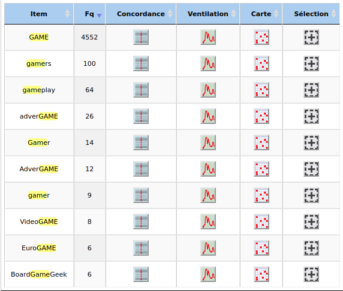

Ventilation
Graphique de ventilation de la fréquence absolue du mot "game" en fonction de la page
Graphique de ventilation de la fréquence relative du mot "game" en fonction de la page
Graphique de ventilation de l'indice de spécificité du mot "game" en fonction de la page
Ces trois graphiques montrent la fréquence d’utilisation du mot “game” dans les différentes pages web du corpus anglais.
Dans le premier on peut voir la fréquence absolue du mot jeu dans les différentes pages. Par exemple, la page 22 est celle qui contient le plus d'occurrences du mot “jeu”.
Dans le second, on peut voir la fréquence relative du mot “game” dans les différentes pages. Ce graphique est plus intéressant que le premier car les pages ont des tailles différentes. La comparaison entre les pages est donc possible, on peut par exemple comparer la fréquence d’utilisation relative du mot dans la page 22 qui est moins élevée en comparaison aux pages 11 ou 5 dont la fréquence absolue était pourtant inférieure.
Dans le troisième, il s’agit de l’indice de spécificité du mot “game” en fonction de la page web. Ce graphique nous donne des indications sur comment le mot “game” est utilisé dans ces pages. +
Cooccurrents
Le site iTrammeur nous permet de faire une analyse des cooccurrents de notre mot. Cela nous donne un aperçu des contextes dans lesquels le mot “game” est utilisé. Cette recherche est faite avec le fichier dump créé pour iTrammeur. Le fichier contexte pour iTrameur aurait pu être utilisé afin d’avoir une analyse plus précise mais nous avons choisi le fichier dump car nous pouvions tester les différents paramètres d’iTrameur et ajuster notre analyse plus facilement.
Tableau des cooccurrences avec leur indices de spécificité(page1)
Tableau des cooccurrences avec leur indices de spécificité(page2)
Tableau des cooccurrences avec leur indices de spécificité(page3)

Tableau des cooccurrences avec leur indices de spécificité(page4)
Dans le tableau ci-dessus, nous pouvons voir les mots qui cooccurent avec "game" trier selon leur indice de spécificité.
Graphique de réseau des cooccurrence avec leur indices de spécificités
Les mots choisis dans ce graphique et présents dans le tableau sont des cooccurrents du mot “game” qui sont placés 10 termes avant ou 10 termes après celui-ci et qui ont un indice de spécificité supérieur à 10. Les termes affichés sont les mots qui sont retrouvés avec “game” le plus souvent. On retrouve des mots outils comme “a”, “the”, “that”, “as”, “such”, etc. qui nous donnent des indications sur son utilisation grammaticale. Dans les mots ayant un indice de spécificité le plus élevé, on trouve des mots lexicaux comme “adults”, “computer”, “drinking” , “video”, “mobile”.
Dans ce graphique ci-dessous vous pouvez voir le même graphique mais avec un indice de spécificité minimum de 5. Un indice inférieur montre un plus grand nombre de mots moins spécifique aux contextes d’utilisation de “game”. Le graphique est plus difficile à lire et les thèmes plus larges.
Il est cependant intéressant de remarquer certains thèmes qui ressortent de ce graphique et qui n'apparaissent pas dans celui au-dessus. Par exemple, des termes comme “industry”, “companies”, “advertising” … ou comme “outdoor”, “Olympics”, “dice”.
Graphique de réseau des cooccurrence avec leur indices de spécificités (minimum 5)
Dérivations et composés
En anglais, le mot “game” est utilisé pour former d’autres mots par suffixation ou flexion. Nous avons utilisé l’option de recherche du dictionnaire sur iTrammeur pour trouver les différents composés de “game”. Ces dérivés sont souvent formés avec des affixes comme “-er”, “-ing”, mais pour la plupart ils s’agit de mots composés comme "gamergate", “gameplay”, “gamepads”, etc. On trouve des types de jeux : “boardgame”, “cardgame”, “videogame”, "minigame", "retrogame", "Eurogame", "wargame",etc. On retrouve également des composés de "game" n'ayant pas le sens de "jeu" mais de "gibier", comme "gamebird".
En suivant ce lien vous trouverez la liste complète des dérivés et composés de "game" présents dans le corpus.

Extrait du tableau des dérivés de "game" du corpus anglais